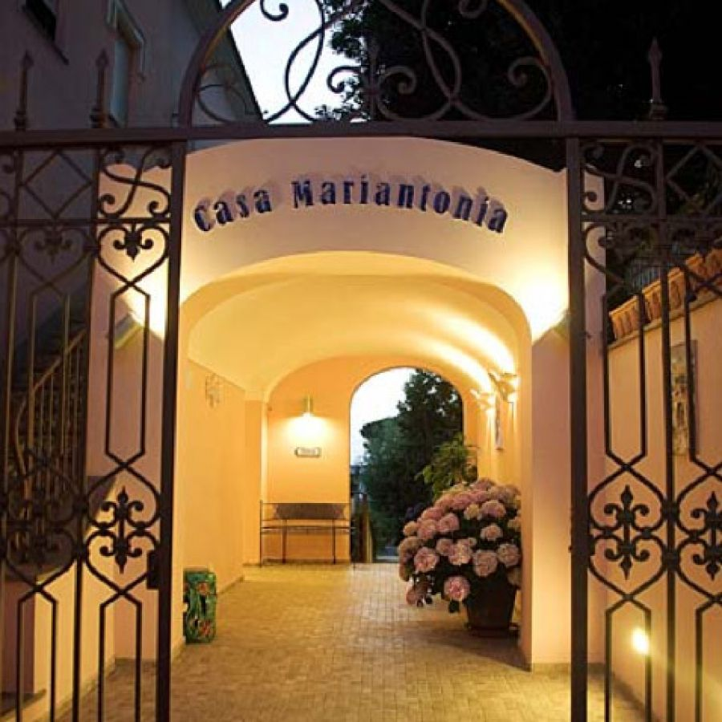
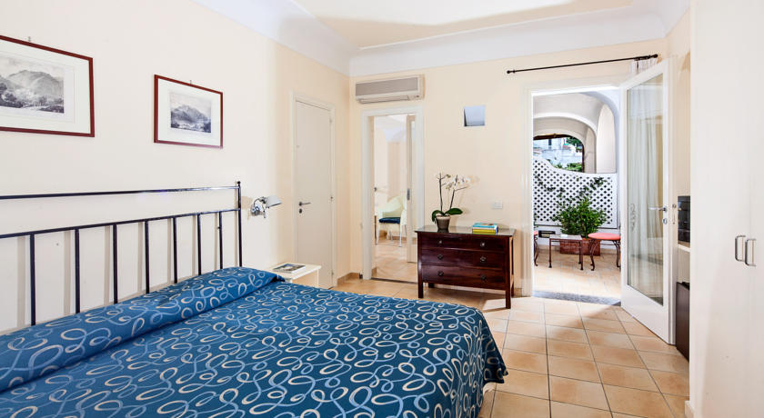
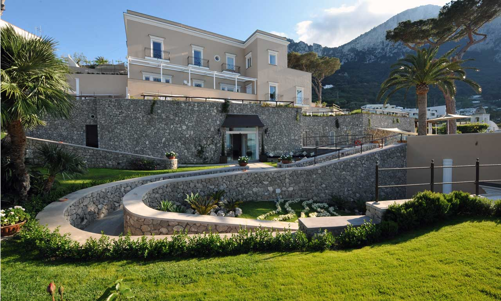
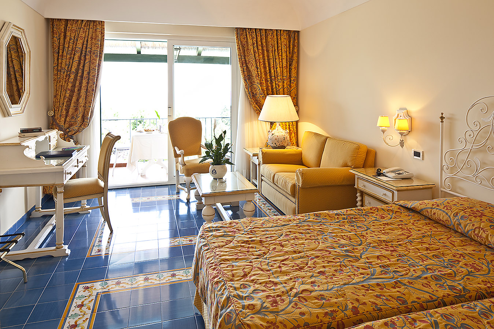
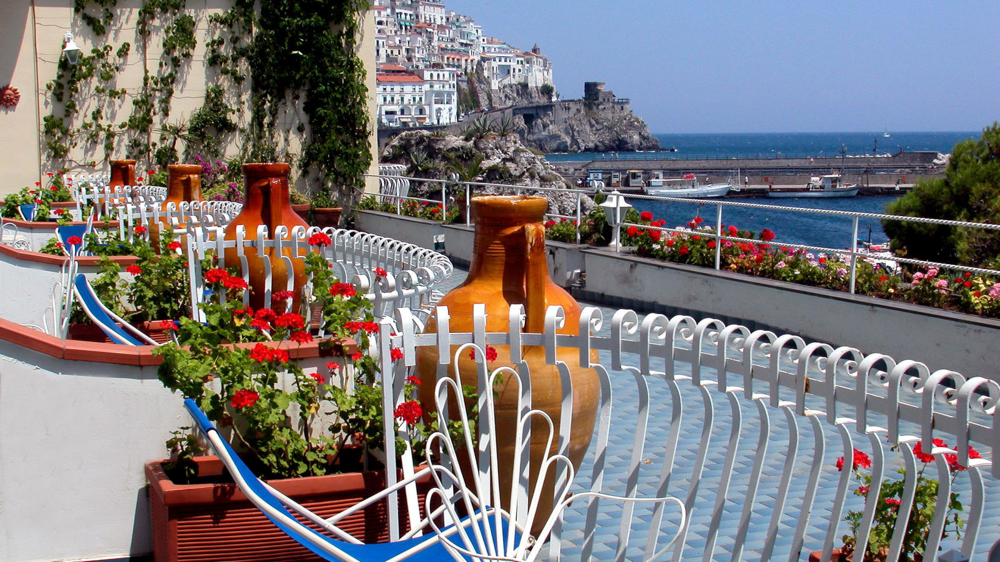

至福のひとときを…
Casa Mariantonia
サンミケーレ教会の近くにある豪華なホテルで、アナカプリの中心の遊歩道に面しているのでとても安心で便利です。客室がわずか9室と少ないため、混むことなく有意義な時を過ごせるでしょう。レモンの木が見事な庭園もあって、朝食はそれを眺めながら大きなテラスで寛げます。
Official Site
Hotel Senaria
最寄りのバス停から徒歩2分のところにあり、青の洞窟やカプリへのアクセスも充実しています。カプリらしい白い塗り壁が、穏やかで落ち着いた雰囲気を楽しませてくれます。
Official Site
Villa Marina Capri Hotel & Spa
マリーナ・グランデから1キロ、徒歩で行けるロケーション良好のホテルです。見事な庭園とプールを備えていて、室内はモダンでとても華やかです。客室数も19と少なめなのでサービスが行き届いています。
Official Site
Hotel Excelsior Parco
カプリ島の玄関口マリーナグランデ港にも、ビーチにも近くて最高の立地です。カプリ島の到着予定時刻を知らせれば、無料でピックアップの迎えに来てくれます。またカプリ中心の広場への往復シャトルも運行。不便なくカプリ等を満喫できること間違いありません。
Official Site
Hotel La Bussola
アナカプリの歴史的中心部から徒歩10分のホテルは、カプリ様式の白くて可愛い造りです。もともとはパスタ工場だったとは思えないほど豪華なつくりになっていて、全客室から島や海の景色を眺めることができます。
Official Site
Basic Information
- Country: Italy
- Location: Tyrrhenian Sea
- Average Highest Temperature: 22℃
- Population: 12,200
- Area: 10.4㎢
- Average Lowest Temperature: 12℃